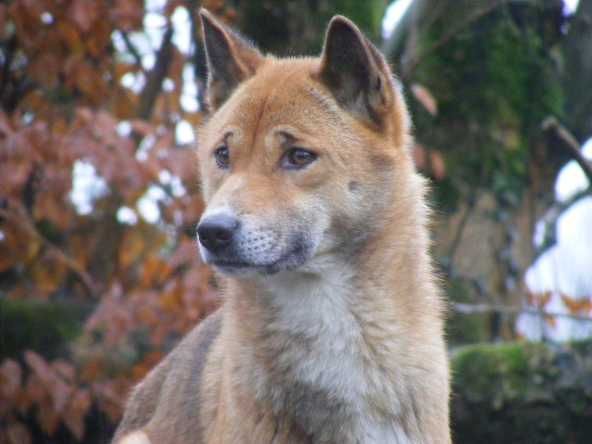
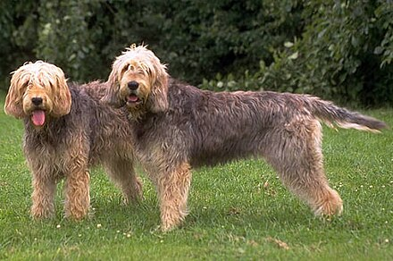
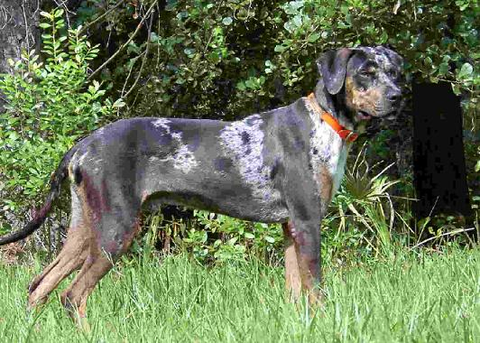

Tres Razas De Perros Más Rares Del Mundo
En el tremendo universo de los compañeros caninos, existen aquellas razas que casi todo el mundo puede percibir sin dudarlo y aquellas que siguen siendo tesoros improbables, conocidos exclusivamente por un puñado elegido. Mientras que los labradores y beagles del mundo saltan en gran aclamación, varias variedades esperan en las sombras, haciendo alarde de reflejos excepcionales, relatos asombrosos y personajes inconfundibles. Deberíamos emprender una excursión para encontrar 3 variedades caninas súper poco comunes que, con toda probabilidad, es posible que nunca hayas experimentado.
1. Canino cantor de Nueva Guinea Originario de los países altos de Nueva Guinea, el canino cantor de Nueva Guinea es prestigioso por su grito único y agradable, que con frecuencia contrasta con la melodía de una ballena jorobada. Esta raza no solo es poco común, sino que también está cubierta de secretos, con numerosas partes de su forma salvaje de comportarse aún por descubrir. A pesar de su naturaleza salvaje, son conocidos por ser versátiles y pueden establecer vínculos con las personas, ofreciendo una mezcla de lo salvaje y lo reconocible.
2. Otterhound, El Otterhound, una variedad canina local inglesa, es conocida por su inconfundible pelaje desagradable y sus patas palmeadas, una transformación ideal por su motivación única detrás de la caza de nutrias. Con una nariz afilada y un comportamiento cordial, los Otterhounds son excelentes caninos de trabajo, pero rara vez se ven, incluso en su país, lo que los convierte en una vista realmente poco común como en el mundo canino.
3. Catalburun, Empezando por Turquía, el Catalburun es una de las principales variedades que destaca por su llamativa nariz partida, una marca excepcionalmente poco común en el mundo canino. Este interesante componente era habitualmente estimado para mejorar sus habilidades de seguimiento. Los Catalburuns son conocidos por su inquebrantabilidad y naturaleza defensiva, lo que los convierte en increíbles guardianes para aquellos que tienen la suerte de experimentarlos.